caltrain
the problem
what time is the next caltrain? today, answering that means one of these:
option 4: other apps
- the goods: greys out past trains
intention
- user: the daily commuter
- no taps: integrated in os
- simple
version 1
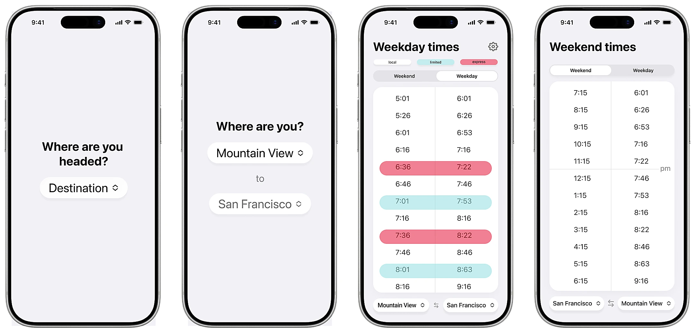
onboarding
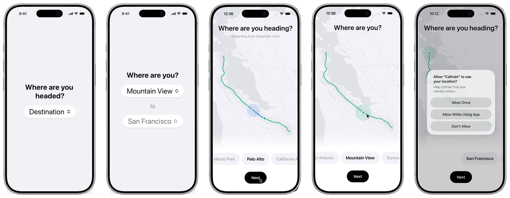
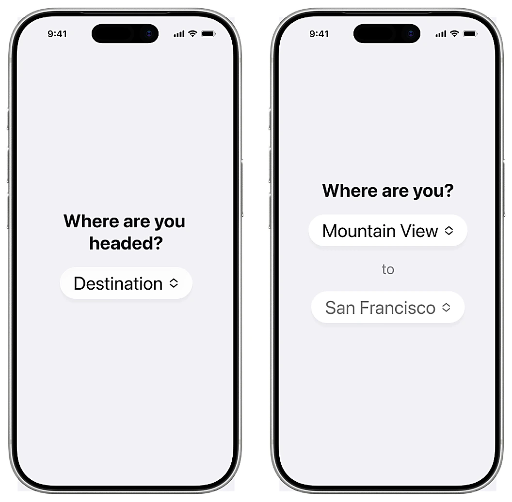
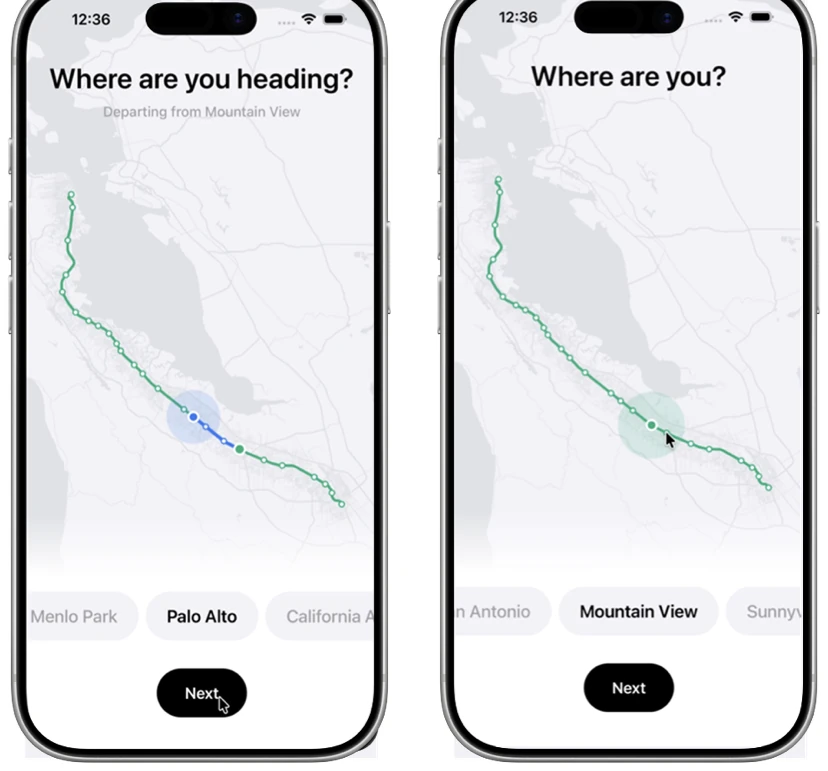
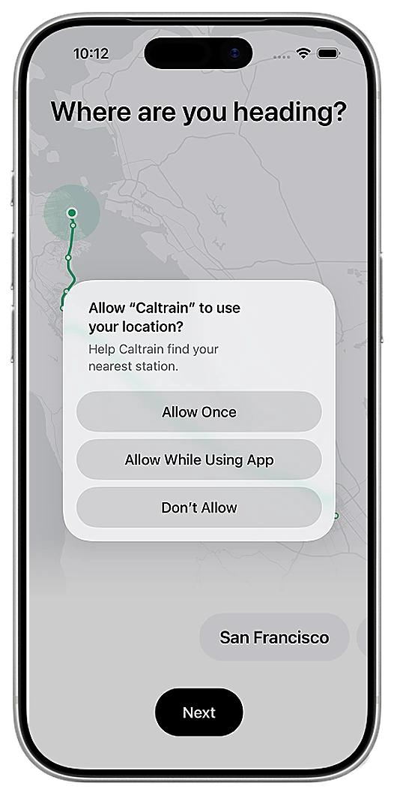
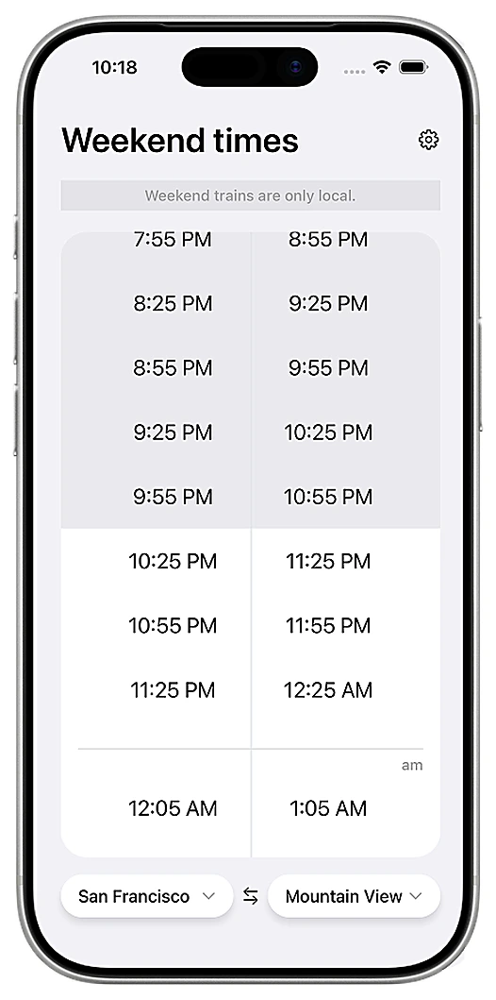
- weekend/weekday
- grey out past trains
- anchor to next departing train
version 2
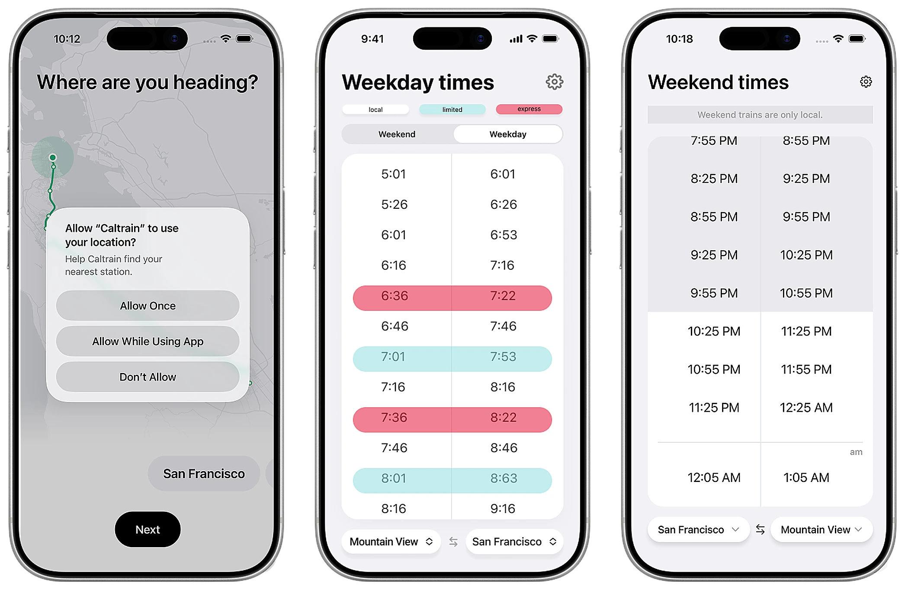
progressive disclosure
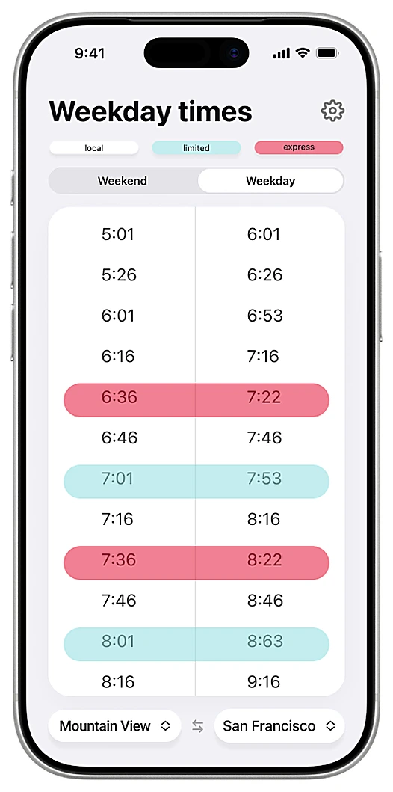
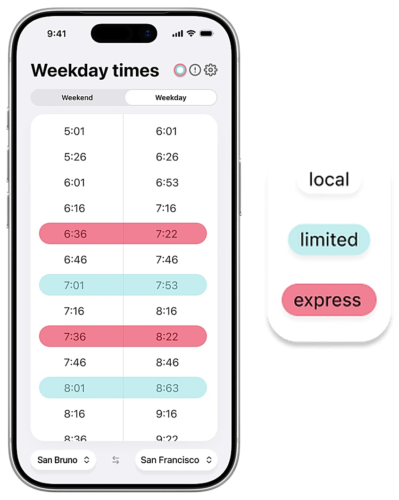
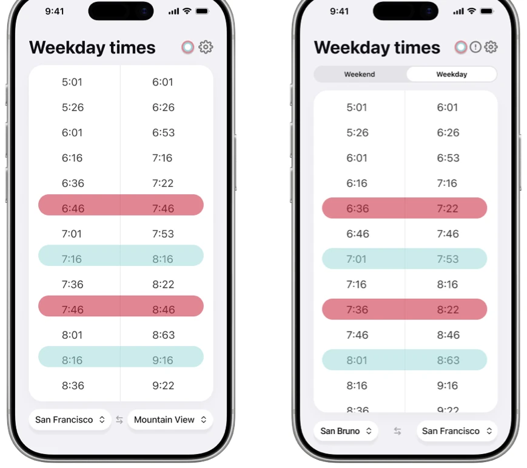
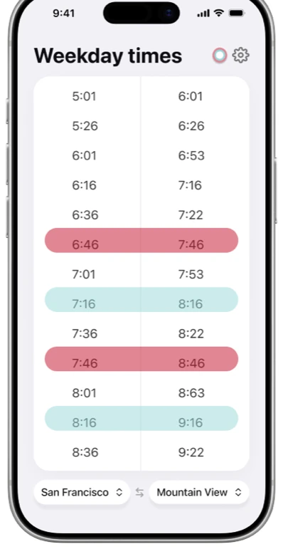
version 3
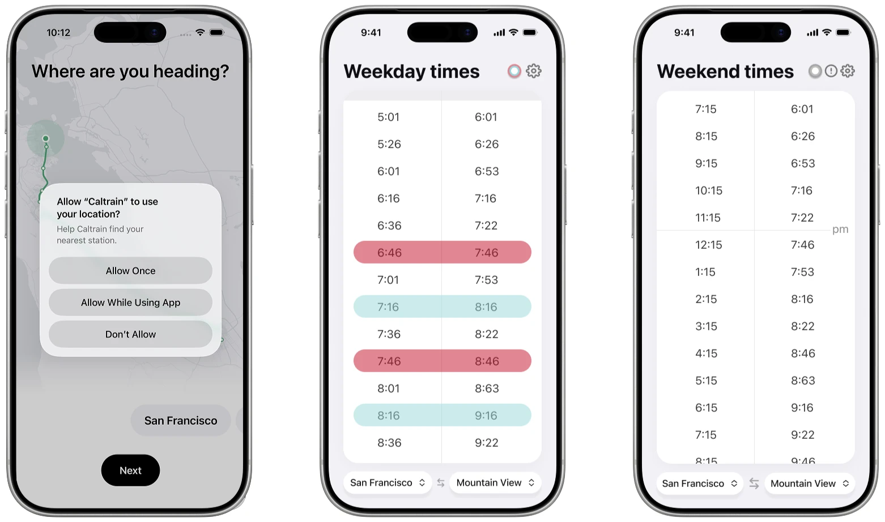